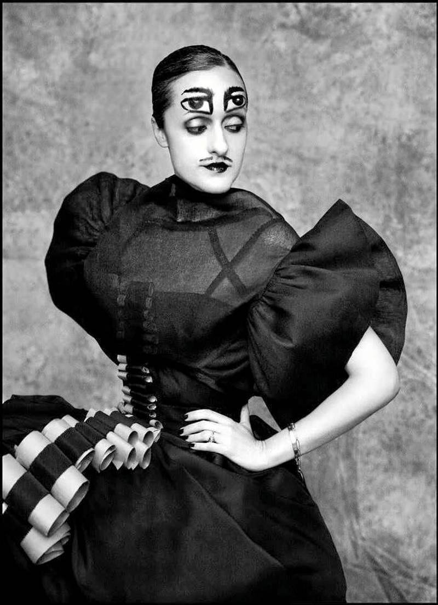

Retrato
[PLACEHOLDER: descripción corta del servicio.]

Nació en Bucaramanga, Colombia, en 1959, y a los 14 años se trasladó con su familia a Míchigan, Estados Unidos — allí adoptó el nombre profesional "Ruvén Afanador". Comenzó su carrera en Milán y a inicios de los años noventa se radicó en Nueva York, donde vive actualmente.
Es uno de los fotógrafos de moda y retrato más reconocidos internacionalmente: su trabajo se ha publicado en Vogue, Elle, Marie Claire, Vanity Fair, Rolling Stone, Time y New York Magazine. Es autor del libro Torero (2001), una serie de retratos en blanco y negro de toreros de México, Colombia, Perú y España.
[PLACEHOLDER: descripción corta del servicio.]
[PLACEHOLDER: descripción corta del servicio.]
[PLACEHOLDER: descripción corta del servicio — ej. libros como Torero.]
[PLACEHOLDER: email] · [PLACEHOLDER: teléfono] · [PLACEHOLDER: Instagram]